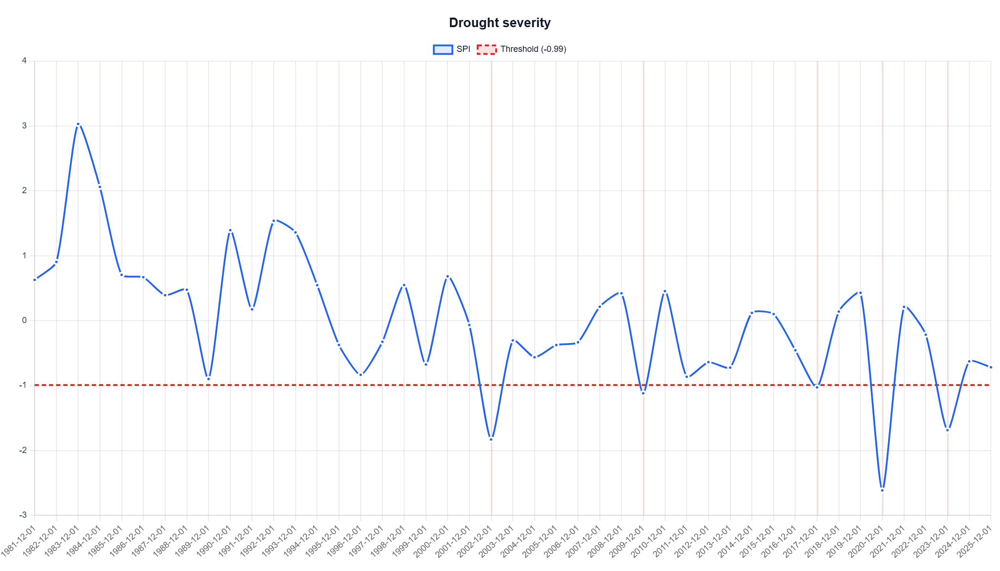
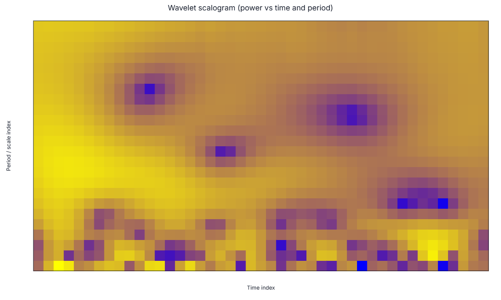

1. Station metadata and experimental setup
| Item | Value |
|---|---|
| Location label used in DMAP-AI | Selected point (32.2226, -110.9747) |
| Coordinates | 32.2226, -110.9747 |
| Analysis period | 1981-01-01 to 2025-12-31 |
| Drought index and scale | SPI, yearly calendar-year aggregation |
| Data source | NASA POWER, point-based yearly total precipitation |
| Category method | Classic SPI thresholds |
| Drought-event threshold | SPI <= -0.99 |
| Purpose of this document | Compare ChatGPT chart-only interpretation with ChatGPT interpretation using the DMAP-AI structured AI request. |
The built-in Gemini responses exported by DMAP-AI are retained as audit evidence, but the interpretations below are written as ChatGPT interpretations for the research comparison.
Back to top2. Drought severity interpretation
Selected chart: drought severity - SPI line with shaded events.

2.1 Method A - ChatGPT chart-only interpretation
From the chart alone, the SPI series shows several isolated years below the drought threshold line near SPI = -1. The most visually severe drought occurs around 2020, where the SPI drops well below -2. A second strong dry year is visible around 2002, and another major dry year appears around 2023. Smaller threshold crossings are visible around 2009 and 2017.
The chart-only interpretation suggests episodic drought behavior rather than a long continuous drought period. Most threshold crossings appear as single-year events, and the chart does not show a clear multi-year sequence of SPI values below the drought threshold.
The chart-only method is useful for identifying visually obvious drought years, but it is less reliable for exact SPI values, drought magnitudes, and formal event counting. It can identify the main pattern, but the exact severity class and magnitude require structured numeric context.
2.2 Method B - ChatGPT interpretation using DMAP-AI structured severity request
| Event | Start | End | Duration | Min SPI | Magnitude | Severity class |
|---|---|---|---|---|---|---|
| 1 | 2002 | 2002 | 1 | -1.830 | 0.840 | severe |
| 2 | 2009 | 2009 | 1 | -1.119 | 0.129 | moderate |
| 3 | 2017 | 2017 | 1 | -1.028 | 0.038 | moderate |
| 4 | 2020 | 2020 | 1 | -2.614 | 1.624 | extreme |
| 5 | 2023 | 2023 | 1 | -1.686 | 0.696 | severe |
The structured DMAP-AI request identifies 5 drought events using the threshold SPI <= -0.99. All detected events last one yearly time step, so the Tucson-area SPI record shows single-year drought episodes rather than sustained multi-year drought persistence at the yearly scale.
The most severe event occurs in 2020, with minimum SPI = -2.614 and magnitude = 1.624. Under the classic SPI categories, this is an extreme drought event. The 2002 event is severe, with SPI = -1.830 and magnitude = 0.840, while the 2023 event is also severe, with SPI = -1.686 and magnitude = 0.696.
The 2009 and 2017 events are moderate droughts, with SPI values just below the event threshold. Because all events are one-year events, drought severity is driven more by event intensity than by duration for this location. The structured request also clarifies that magnitude is the accumulated deficit below the selected threshold, not total dryness or wetness magnitude.
2.3 Severity method comparison
| Criterion | Chart-only ChatGPT | Structured-request ChatGPT | DMAP-AI contribution |
|---|---|---|---|
| Most severe event | Identifies 2020 visually as the lowest SPI year. | Confirms 2020 as extreme drought with SPI = -2.614 and magnitude = 1.624. | Structured request gives exact severity and magnitude. |
| Event count | Can visually detect several threshold crossings, but count may be approximate. | Identifies exactly 5 events: 2002, 2009, 2017, 2020, and 2023. | Structured request improves reproducibility. |
| Persistence | Suggests events are isolated, but duration is inferred visually. | Confirms every event lasted one yearly step. | Structured request separates intensity from persistence. |
| Risk of error | May miss marginal events close to the threshold or overstate dry periods near the threshold. | Uses exact SPI threshold and event table. | DMAP-AI reduces ambiguous visual judgment. |
3. Periodicity / wavelet variability interpretation
Selected chart: wavelet scalogram (power vs time and period).

3.1 Method A - ChatGPT chart-only interpretation
From the scalogram image alone, the plot shows broad zones of stronger and weaker wavelet power across time and period. However, the chart does not provide numerical period labels or year labels on the axes, so exact dominant periods cannot be reliably extracted from the image alone.
A chart-only interpretation can say that there are intermittent high-power patches at different time scales, suggesting that drought/precipitation variability is not uniform through time. However, without numeric period values, it would be risky to state a precise recurrence interval or call the pattern a fixed drought cycle.
The main chart-only limitation is that the scalogram supports qualitative time-frequency interpretation, but not precise dominant-period identification unless the reader has the underlying period axis and wavelet summary.
3.2 Method B - ChatGPT interpretation using DMAP-AI structured wavelet request
| Period (years) | Power | Coherence | Reliability | Flags | Caution |
|---|---|---|---|---|---|
| 9.22 | 1.226 | 0.987 | 0.974 | None | No extra caution. |
| 8.30 | 1.209 | 0.986 | 0.959 | None | No extra caution. |
| 10.13 | 1.103 | 0.987 | 0.876 | None | No extra caution. |
| 7.39 | 1.020 | 0.983 | 0.803 | None | No extra caution. |
| 11.04 | 0.931 | 0.986 | 0.738 | None | No extra caution. |
| 22.00 | 0.890 | 0.987 | 0.708 | long_period_low_support | Interpret cautiously. |
| 1.00 | 0.837 | 0.979 | 0.653 | None | No extra caution. |
| 21.09 | 0.791 | 0.985 | 0.625 | long_period_low_support | Interpret cautiously. |
The structured wavelet request identifies the highest-power and best reliable peak at approximately 9.22 yearly time steps, with power = 1.226, coherence = 0.987, and reliability = 0.974. This indicates a prominent near-decadal variability band in the yearly SPI series.
The nearby high-ranked periods around 7.39, 8.30, 10.13, and 11.04 years suggest that the signal should be interpreted as a broader 7-11 year variability band rather than as one exact recurrence interval.
The structured request also flags longer periods near 21-22 years as long-period/low-support features that should be interpreted cautiously. This is important because long periods occupy a substantial fraction of the 45-year record and can be unstable at record boundaries.
The correct interpretation is therefore not that drought will recur every 9.2 years. A safer statement is that the historical SPI record contains a strong near-decadal wavelet power band, which is a diagnostic variability signal rather than a deterministic drought forecast.
3.3 Periodicity method comparison
| Criterion | Chart-only ChatGPT | Structured-request ChatGPT | DMAP-AI contribution |
|---|---|---|---|
| Dominant period | Cannot reliably determine a precise period from the scalogram image alone. | Identifies a highest-power and best reliable peak near 9.22 years. | Structured request provides numeric evidence. |
| Interpretation of cycle | May be tempted to describe visible bands as recurring cycles. | Frames the 7-11 year signal as a variability band, not a deterministic cycle. | DMAP-AI reduces overclaiming. |
| Uncertainty | Limited ability to identify which bands require caution. | Flags 21-22 year bands as long-period/low-support features. | Structured request improves uncertainty handling. |
| Reproducibility | Depends on subjective visual reading. | Uses period, power, coherence, reliability, and caution flags. | Structured request is more reproducible and auditable. |
4. Research-use conclusion for Station/Location 2
For the Tucson-area point, DMAP-AI improves ChatGPT interpretation in both severity and wavelet variability tasks. In the severity task, the chart-only method correctly identifies the most obvious extreme drought year, but the structured request provides exact event counts, durations, SPI minima, magnitudes, and severity classes. This makes the result more reproducible and helps distinguish intensity from persistence.
The wavelet task shows a stronger benefit from the structured request. The scalogram alone is visually useful but does not support exact period extraction. The structured request identifies a strong near-decadal variability band centered around 9.22 years and provides reliability and caution information. This prevents the LLM from converting a wavelet feature into an unsupported drought-cycle or forecast claim.
This station therefore supports the paper hypothesis that DMAP-AI structured chart-specific AI requests are most valuable when the interpretation requires numeric context, event definitions, uncertainty handling, and scientific restraint.
Back to topAppendix. Exported AI audit files used
| Item | File in uploaded ZIP |
|---|---|
| Severity structured request | severity/ai/severity/ai_structured_request.json |
| Severity backend audit / prompt | severity/ai/severity/ai_backend_audit_prompt.json |
| Severity model response | severity/ai/severity/ai_model_response.json |
| Wavelet structured request | scalogram/ai/scalogram/ai_structured_request.json |
| Wavelet backend audit / prompt | scalogram/ai/scalogram/ai_backend_audit_prompt.json |
| Wavelet model response | scalogram/ai/scalogram/ai_model_response.json |
Recommendation for the final 40-location paper: export the Global wavelet spectrum AI request as the primary dominant-periodicity evidence. The scalogram can be retained as supporting time-frequency evidence.
Back to top